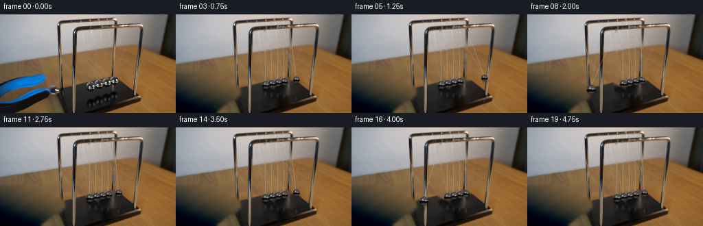
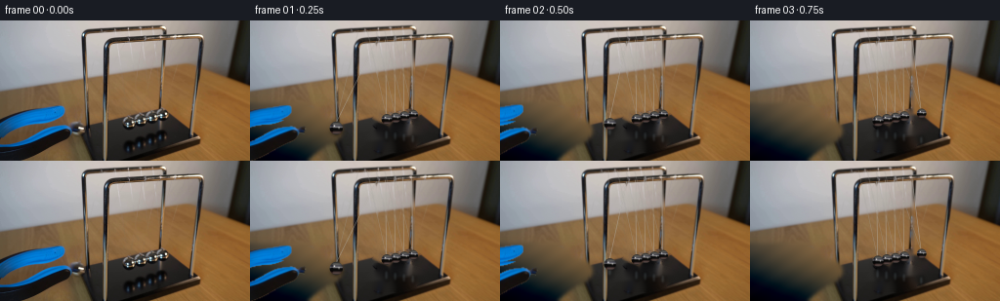
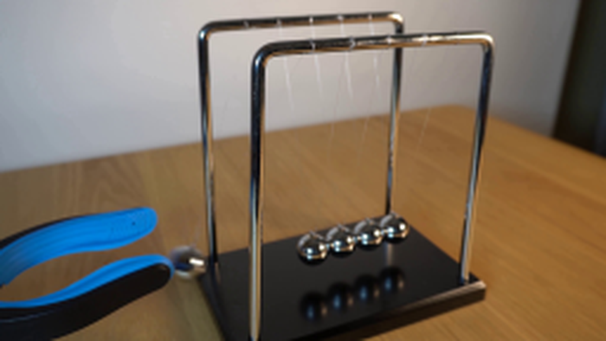
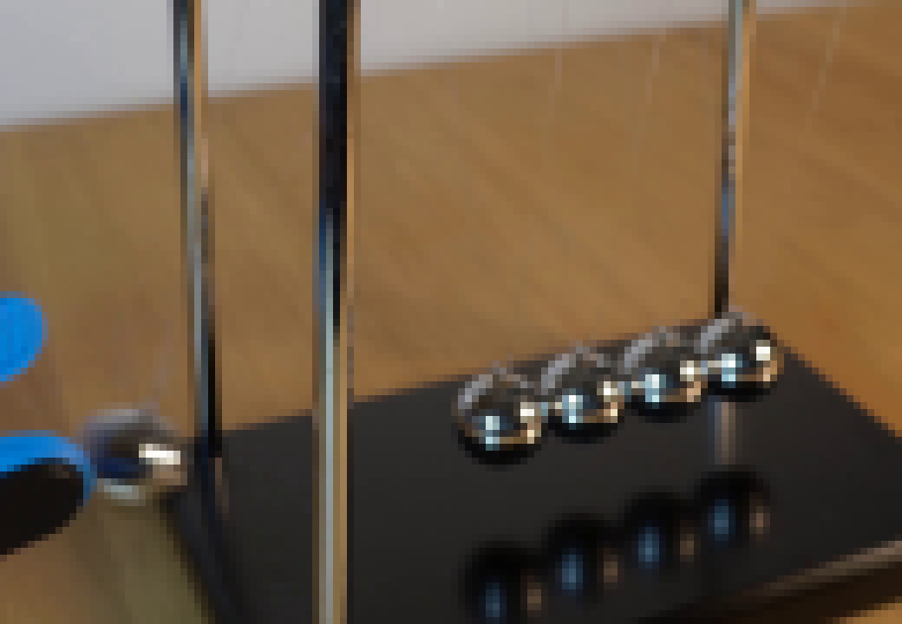
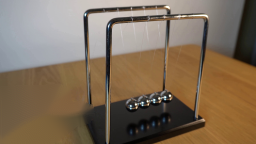
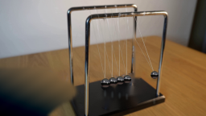
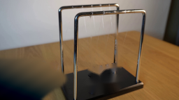
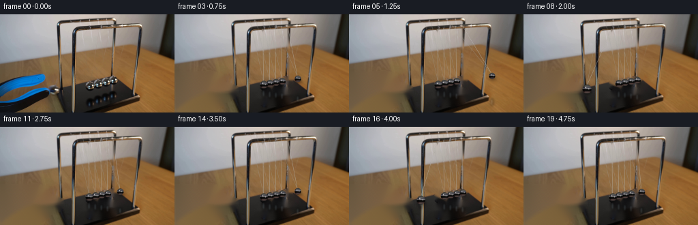

CODING AGENTS AS PIXEL WORLD MODELS
traex/GPT-5.6-Sol · 0160
点击播放 · 原生 RGB 像素
逐轮保存的候选
回放视频、检查图与代码变化。
每份候选均可单独播放。实际图片检查记录在下方工具轨迹中。
候选 01播放与检查图
点击播放 · 原生 RGB 像素


展开代码变化
--- 上一保存版本
+++ 本次保存版本
@@ -0,0 +1,235 @@
+from pathlib import Path
+import math
+import cv2
+import numpy as np
+from PIL import Image
+import artifact_io
+
+CASE_DIR = Path(__file__).resolve().parent
+W, H, N, FPS = 256, 144, 20, 4
+S = 4
+
+
+def alpha_over(dst, src, alpha):
+ a = np.clip(alpha.astype(np.float32) / 255.0, 0, 1)[..., None]
+ return np.clip(src.astype(np.float32) * a + dst.astype(np.float32) * (1-a), 0, 255).astype(np.uint8)
+
+
+def translated_rgba(rgb, alpha, dx, dy):
+ M = np.float32([[1, 0, dx], [0, 1, dy]])
+ r = cv2.warpAffine(rgb, M, (W, H), flags=cv2.INTER_LINEAR,
+ borderMode=cv2.BORDER_CONSTANT, borderValue=(0,0,0))
+ a = cv2.warpAffine(alpha, M, (W, H), flags=cv2.INTER_LINEAR,
+ borderMode=cv2.BORDER_CONSTANT, borderValue=0)
+ return r, a
+
+
+def make_clean_plate(src):
+ """Remove the hand tool, balls, and their changing reflections from a copy."""
+ plate = src.copy()
+
+ # The tool occupies a border-connected area. A fitted table surface gives a
+ # cleaner reconstruction than allowing a generic inpaint to pull in its black jaw.
+ tool_region = np.zeros((H, W), np.uint8)
+ poly = np.array([(0,84),(58,83),(70,88),(73,98),(82,101),(93,105),
+ (94,116),(88,124),(78,127),(69,134),(58,143),(0,143)], np.int32)
+ cv2.fillPoly(tool_region, [poly], 255)
+
+ yy, xx = np.mgrid[0:H, 0:W]
+ horizon = 74 - 0.105*xx
+ valid = (yy > horizon + 3)
+ # Regions of bare wood, excluding stand, tool, balls and black base.
+ samples = valid & (((xx > 211)) |
+ ((xx < 82) & (yy < 84)) |
+ ((xx > 174) & (yy < 88)) |
+ ((xx > 92) & (xx < 123) & (yy < 91)))
+ samples &= ~(((xx > 196) & (xx < 208)) | ((xx > 103) & (xx < 114)))
+ x = xx[samples].astype(np.float64)/W
+ y = yy[samples].astype(np.float64)/H
+ A = np.column_stack([np.ones_like(x), x, y, x*y, x*x, y*y])
+ predA = np.column_stack([np.ones(H*W), (xx/W).ravel(), (yy/H).ravel(),
+ (xx*yy/(W*H)).ravel(), ((xx/W)**2).ravel(),
+ ((yy/H)**2).ravel()])
+ fill = np.empty_like(src)
+ for c in range(3):
+ coef, *_ = np.linalg.lstsq(A, src[...,c][samples].astype(float), rcond=None)
+ fill[...,c] = np.clip(predA @ coef, 0, 255).reshape(H,W)
+ # Add restrained deterministic wood streaking to avoid a sterile flat patch.
+ streak = (1.8*np.sin((xx + 1.45*yy)*0.20) +
+ 1.1*np.sin((xx + 1.8*yy)*0.055 + 1.4))
+ fill = np.clip(fill.astype(float) + streak[...,None]*np.array([1.0,.72,.42]), 0,255).astype(np.uint8)
+ feather = cv2.GaussianBlur(tool_region, (0,0), 2.0)
+ plate = alpha_over(plate, fill, feather)
+
+ # Remove all five original balls and the soft reflections on the black plinth.
+ moving = np.zeros((H,W), np.uint8)
+ centers = [(131,103),(140,101),(149,100),(158,98),(167,96)]
+ for x0,y0 in centers:
+ cv2.circle(moving, (x0,y0), 7, 255, -1)
+ cv2.ellipse(moving, (148,120), (31,14), -7, 0, 360, 255, -1)
+ # The two end strings are redrawn, so erase the old fine strands.
+ cv2.line(moving, (129,22), (131,98), 255, 2)
+ cv2.line(moving, (166,20), (167,92), 255, 2)
+ plate = cv2.inpaint(plate, moving, 3, cv2.INPAINT_TELEA)
+ return plate
+
+
+def extract_tool(src):
+ """Photographic alpha mattes for upper/lower grabber jaws (ball excluded)."""
+ hsv = cv2.cvtColor(src, cv2.COLOR_RGB2HSV)
+ lum = cv2.cvtColor(src, cv2.COLOR_RGB2GRAY)
+ blue = ((hsv[...,0] > 82) & (hsv[...,0] < 120) & (hsv[...,1] > 95) & (hsv[...,2] > 55))
+ dark = lum < 58
+ upper_zone = np.zeros((H,W),np.uint8)
+ cv2.fillPoly(upper_zone,[np.array([(0,82),(65,81),(76,90),(78,100),(70,106),(0,106)],np.int32)],255)
+ lower_zone = np.zeros((H,W),np.uint8)
+ cv2.fillPoly(lower_zone,[np.array([(0,101),(68,101),(79,108),(77,122),(63,133),(49,143),(0,143)],np.int32)],255)
+ upper = ((blue|dark) & (upper_zone>0)).astype(np.uint8)*255
+ lower = ((blue|dark) & (lower_zone>0)).astype(np.uint8)*255
+ upper = cv2.morphologyEx(upper, cv2.MORPH_CLOSE, np.ones((3,3),np.uint8))
+ lower = cv2.morphologyEx(lower, cv2.MORPH_CLOSE, np.ones((3,3),np.uint8))
+ upper = cv2.GaussianBlur(upper,(0,0),.45)
+ lower = cv2.GaussianBlur(lower,(0,0),.45)
+ return upper, lower
+
+
+def ball_state(t):
+ """Endpoint displacement: only one free end ball moves between impacts."""
+ left_d = right_d = 0.0
+ # Initial released ball approaches the row.
+ if t < .65:
+ left_d = -52.0 * math.cos(0.5*math.pi*t/.65)
+ return left_d, right_d
+ # Alternating one-second outbound-and-return arcs with realistic damping.
+ events = [(.65, 'R', 1.00), (1.65, 'L', .82), (2.65, 'R', .68),
+ (3.65, 'L', .55), (4.65, 'R', .45)]
+ for start, side, amp in events:
+ if start <= t < start+1.0:
+ pulse = math.sin(math.pi*(t-start))
+ if side == 'R': right_d = 28.0*amp*pulse
+ else: left_d = -52.0*amp*pulse
+ break
+ return left_d, right_d
+
+
+def sphere_rgba(cx, cy, radius):
+ """Small environment-reflecting chrome sphere, antialiased at 4x."""
+ hs, ws = H*S, W*S
+ Y,X = np.mgrid[0:hs,0:ws]
+ fx, fy, rr = cx*S, cy*S, radius*S
+ nx = (X-fx)/rr
+ ny = (Y-fy)/rr
+ q = nx*nx + ny*ny
+ inside = q <= 1.0
+ z = np.sqrt(np.maximum(0,1-q))
+
+ # Reflections of the pale wall, bright horizon, black cradle base and warm table.
+ val = np.zeros_like(nx) + 35
+ val += 68*np.exp(-((ny+0.63)/0.30)**2)
+ val += 102*np.exp(-((ny+0.18)/0.115)**2)
+ val -= 30*np.exp(-((ny-0.22)/0.22)**2)
+ val += 48*np.exp(-((ny-0.72)/0.20)**2)
+ val *= (.52 + .48*z)
+ # vertical black frame reflection and tiny hard specular sources
+ val -= 45*np.exp(-((nx+0.62)/0.13)**2) * np.exp(-((ny+0.02)/0.72)**2)
+ spec1 = np.exp(-(((nx+0.28)/.18)**2 + ((ny+.35)/.16)**2)*2.4)
+ spec2 = np.exp(-(((nx-.40)/.13)**2 + ((ny+.02)/.22)**2)*2.0)
+ val += 175*spec1 + 120*spec2
+ val = np.clip(val,8,245)
+ rgb = np.zeros((hs,ws,3),np.float32)
+ rgb[...,0]=val*1.01 + 18*np.exp(-((ny-.65)/.20)**2)
+ rgb[...,1]=val
+ rgb[...,2]=val*.95 + 12*np.exp(-((ny+.30)/.22)**2)
+ # Dark polished rim with a narrow silvery edge.
+ rim = np.clip((1-q)*rr*.52,0,1)
+ alpha = np.where(inside, np.minimum(1.0, rim), 0)
+ rgb *= np.where(inside,1,0)[...,None]
+ return rgb.astype(np.uint8), (alpha*255).astype(np.uint8)
+
+
+def draw_scene(plate, t, src, upper_alpha, lower_alpha):
+ # Work at 4x for hairline strings and soft shadows.
+ big = cv2.resize(plate, (W*S,H*S), interpolation=cv2.INTER_CUBIC)
+ left_d, right_d = ball_state(t)
+ rest = [(131.0,103.0,5.8),(140.0,101.4,5.55),(149.0,99.8,5.35),
+ (158.0,98.2,5.2),(167.0,96.5,5.05)]
+ balls = [list(v) for v in rest]
+ balls[0][0] += left_d
+ balls[0][1] += (-left_d)*0.173
+ balls[0][2] += (-left_d)*0.025
+ balls[4][0] += right_d
+ balls[4][1] -= right_d*0.145
+ balls[4][2] -= right_d*0.006
+
+ # Soft contact shadows and changing dark reflections on the glossy base.
+ shade = np.zeros((H*S,W*S),np.uint8)
+ refl_rgb = np.zeros_like(big)
+ refl_a = np.zeros((H*S,W*S),np.uint8)
+ for i,(x,y,r) in enumerate(balls):
+ # Ground/contact shadow follows the ball but is subtle over black lacquer.
+ cv2.ellipse(shade,(round((x+1)*S),round((y+4.0)*S)),
+ (round(r*1.05*S),round(r*.40*S)),0,0,360,105,-1,cv2.LINE_AA)
+ # Reflection beneath the row, vertically compressed and defocused.
+ ry = 116.5 + (x-131)*0.16
+ cv2.ellipse(refl_a,(round(x*S),round(ry*S)),
+ (round(r*.72*S),round(r*1.32*S)),0,0,360,52,-1,cv2.LINE_AA)
+ cv2.ellipse(refl_rgb,(round((x-.5)*S),round((ry-.8)*S)),
+ (max(1,round(r*.18*S)),round(r*.70*S)),0,0,360,(120,143,151),-1,cv2.LINE_AA)
+ shade=cv2.GaussianBlur(shade,(0,0),2.1*S)
+ dark=np.zeros_like(big)
+ big=alpha_over(big,dark,shade)
+ refl_a=cv2.GaussianBlur(refl_a,(0,0),1.3*S)
+ refl_rgb=cv2.GaussianBlur(refl_rgb,(0,0),.8*S)
+ big=alpha_over(big,refl_rgb,refl_a)
+
+ # Dual suspension threads. The front and rear rails converge slightly in view.
+ strings=np.zeros_like(big)
+ sa=np.zeros((H*S,W*S),np.uint8)
+ for i,(x,y,r) in enumerate(balls):
+ rx,ry,_=rest[i]
+ front=(rx-1.5,21.0-0.15*(rx-131))
+ rear=(rx-20.0,10.0+0.03*(rx-131))
+ for (px,py), intensity, a in [(front, (202,200,192),118),(rear,(180,180,174),72)]:
+ cv2.line(strings,(round(px*S),round(py*S)),(round((x-.6)*S),round((y-r*.65)*S)),
+ intensity,2,cv2.LINE_AA)
+ cv2.line(sa,(round(px*S),round(py*S)),(round((x-.6)*S),round((y-r*.65)*S)),
+ a,2,cv2.LINE_AA)
+ big=alpha_over(big,strings,sa)
+
+ # Draw farther/right balls first so overlaps follow perspective.
+ for x,y,r in reversed(balls):
+ rgb,a=sphere_rgba(x,y,r)
+ big=alpha_over(big,rgb,a)
+
+ frame=cv2.resize(big,(W,H),interpolation=cv2.INTER_AREA)
+
+ # The grabber releases immediately and withdraws to the left while opening.
+ if t < .70:
+ p=t/.70
+ dx=-56*(p**.85)
+ urgb,ua=translated_rgba(src,upper_alpha,dx,-2.2*p)
+ lrgb,la=translated_rgba(src,lower_alpha,dx,3.2*p)
+ frame=alpha_over(frame,urgb,ua)
+ frame=alpha_over(frame,lrgb,la)
+ return frame
+
+
+def main():
+ src=np.array(Image.open(CASE_DIR/'first_frame.png').convert('RGB'),dtype=np.uint8)
+ assert src.shape==(H,W,3)
+ plate=make_clean_plate(src)
+ upper,lower=extract_tool(src)
+ frames=[]
+ for k in range(N):
+ if k==0:
+ frame=src.copy() # contractual pixel-identical first frame
+ else:
+ frame=draw_scene(plate,k/FPS,src,upper,lower)
+ frames.append(frame)
+ frames=np.stack(frames).astype(np.uint8)
+ assert np.array_equal(frames[0],src)
+ artifact_io.save(frames,CASE_DIR)
+
+
+if __name__=='__main__':
+ main()
候选 02播放与检查图
点击播放 · 原生 RGB 像素

展开代码变化
--- 上一保存版本
+++ 本次保存版本
@@ -35,31 +35,9 @@
(94,116),(88,124),(78,127),(69,134),(58,143),(0,143)], np.int32)
cv2.fillPoly(tool_region, [poly], 255)
- yy, xx = np.mgrid[0:H, 0:W]
- horizon = 74 - 0.105*xx
- valid = (yy > horizon + 3)
- # Regions of bare wood, excluding stand, tool, balls and black base.
- samples = valid & (((xx > 211)) |
- ((xx < 82) & (yy < 84)) |
- ((xx > 174) & (yy < 88)) |
- ((xx > 92) & (xx < 123) & (yy < 91)))
- samples &= ~(((xx > 196) & (xx < 208)) | ((xx > 103) & (xx < 114)))
- x = xx[samples].astype(np.float64)/W
- y = yy[samples].astype(np.float64)/H
- A = np.column_stack([np.ones_like(x), x, y, x*y, x*x, y*y])
- predA = np.column_stack([np.ones(H*W), (xx/W).ravel(), (yy/H).ravel(),
- (xx*yy/(W*H)).ravel(), ((xx/W)**2).ravel(),
- ((yy/H)**2).ravel()])
- fill = np.empty_like(src)
- for c in range(3):
- coef, *_ = np.linalg.lstsq(A, src[...,c][samples].astype(float), rcond=None)
- fill[...,c] = np.clip(predA @ coef, 0, 255).reshape(H,W)
- # Add restrained deterministic wood streaking to avoid a sterile flat patch.
- streak = (1.8*np.sin((xx + 1.45*yy)*0.20) +
- 1.1*np.sin((xx + 1.8*yy)*0.055 + 1.4))
- fill = np.clip(fill.astype(float) + streak[...,None]*np.array([1.0,.72,.42]), 0,255).astype(np.uint8)
- feather = cv2.GaussianBlur(tool_region, (0,0), 2.0)
- plate = alpha_over(plate, fill, feather)
+ # Telea interpolation follows the surrounding table more reliably here than a
+ # global colour fit (the removed shape touches two image borders).
+ plate = cv2.inpaint(plate, tool_region, 7, cv2.INPAINT_TELEA)
# Remove all five original balls and the soft reflections on the black plinth.
moving = np.zeros((H,W), np.uint8)
@@ -106,7 +84,7 @@
for start, side, amp in events:
if start <= t < start+1.0:
pulse = math.sin(math.pi*(t-start))
- if side == 'R': right_d = 28.0*amp*pulse
+ if side == 'R': right_d = 45.0*amp*pulse
else: left_d = -52.0*amp*pulse
break
return left_d, right_d
候选 03播放与检查图

可观测工具轨迹
实际执行的命令与返回图片。
命令 1exit 0
/bin/bash -lc 'cat GENERATION_RULES.md'
命令 2exit 0
/bin/bash -lc "cat prompt.txt && printf '\\n---FILES---\\n' && find . -maxdepth 2 -type f -printf '%p\\n' | sort"
命令 3exit 0
/bin/bash -lc "python3 - <<'PY'
from PIL import Image
im=Image.open('first_frame.png')
print(im.size, im.mode)
PY
ffmpeg -version | head -n 3"命令 4exit 0
/bin/bash -lc "python3 - <<'PY'
from PIL import Image
im=Image.open('first_frame.png')
im.resize((1024,576),Image.Resampling.NEAREST).save('.tmp/up_nearest.png')
im.resize((1024,576),Image.Resampling.LANCZOS).save('.tmp/up_smooth.png')
PY"命令 5exit 0
/bin/bash -lc 'cat artifact_io.py'
命令 6exit 0
/bin/bash -lc "python3 - <<'PY' mods=['cv2','numpy','PIL','scipy','imageio'] for m in mods: try: z=__import__(m); print(m,'ok',getattr(z,'__version__','')) except Exception as e: print(m,e) PY"
命令 7exit 0
/bin/bash -lc "python3 - <<'PY'
from PIL import Image
im=Image.open('first_frame.png')
im.crop((60,45,190,135)).resize((1040,720),Image.Resampling.NEAREST).save('.tmp/crop.png')
PY"命令 8exit 0
/bin/bash -lc "cat > .tmp/test_clean.py <<'PY'
import cv2, numpy as np
im=cv2.imread('first_frame.png')
mask=np.zeros(im.shape[:2],np.uint8)
# entire visible grabber / held ball, feather not needed for inpaint
poly=np.array([[0,86],[61,84],[70,91],[70,101],[78,103],[92,104],[94,115],[89,123],[77,125],[69,132],[54,143],[0,143]],np.int32)
cv2.fillPoly(mask,[poly],255)
# tool black lower jaw region broad
# held sphere
cv2.circle(mask,(80,112),12,255,-1)
out=cv2.inpaint(im,mask,7,cv2.INPAINT_TELEA)
cv2.imwrite('.tmp/clean.png',out)
cv2.imwrite('.tmp/mask.png',mask)
PY
python3 .tmp/test_clean.py"命令 9exit 0
/bin/bash -lc "cat > generate.py <<'PY'
from pathlib import Path
import math
import cv2
import numpy as np
from PIL import Image
import artifact_io
CASE_DIR = Path(__file__).resolve().parent
W, H, N, FPS = 256, 144, 20, 4
S = 4
def alpha_over(dst, src, alpha):
a = np.clip(alpha.astype(np.float32) / 255.0, 0, 1)[..., None]
return np.clip(src.astype(np.float32) * a + dst.astype(np.float32) * (1-a), 0, 255).astype(np.uint8)
def translated_rgba(rgb, alpha, dx, dy):
M = np.float32([[1, 0, dx], [0, 1, dy]])
r = cv2.warpAffine(rgb, M, (W, H), flags=cv2.INTER_LINEAR,
borderMode=cv2.BORDER_CONSTANT, borderValue=(0,0,0))
a = cv2.warpAffine(alpha, M, (W, H), flags=cv2.INTER_LINEAR,
borderMode=cv2.BORDER_CONSTANT, borderValue=0)
return r, a
def make_clean_plate(src):
\"\"\"Remove the hand tool, balls, and their changing reflections from a copy.\"\"\"
plate = src.copy()
# The tool occupies a border-connected area. A fitted table surface gives a
# cleaner reconstruction than allowing a generic inpaint to pull in its black jaw.
tool_region = np.zeros((H, W), np.uint8)
poly = np.array([(0,84),(58,83),(70,88),(73,98),(82,101),(93,105),
(94,116),(88,124),(78,127),(69,134),(58,143),(0,143)], np.int32)
cv2.fillPoly(tool_region, [poly], 255)
yy, xx = np.mgrid[0:H, 0:W]
horizon = 74 - 0.105*xx
valid = (yy > horizon + 3)
# Regions of bare wood, excluding stand, tool, balls and black base.
samples = valid & (((xx > 211)) |
((xx < 82) & (yy < 84)) |
((xx > 174) & (yy < 88)) |
((xx > 92) & (xx < 123) & (yy < 91)))
samples &= ~(((xx > 196) & (xx < 208)) | ((xx > 103) & (xx < 114)))
x = xx[samples].astype(np.float64)/W
y = yy[samples].astype(np.float64)/H
A = np.column_stack([np.ones_like(x), x, y, x*y, x*x, y*y])
predA = np.column_stack([np.ones(H*W), (xx/W).ravel(), (yy/H).ravel(),
(xx*yy/(W*H)).ravel(), ((xx/W)**2).ravel(),
((yy/H)**2).ravel()])
fill = np.empty_like(src)
for c in range(3):
coef, *_ = np.linalg.lstsq(A, src[...,c][samples].astype(float), rcond=None)
fill[...,c] = np.clip(predA @ coef, 0, 255).reshape(H,W)
# Add restrained deterministic wood streaking to avoid a sterile flat patch.
streak = (1.8*np.sin((xx + 1.45*yy)*0.20) +
1.1*np.sin((xx + 1.8*yy)*0.055 + 1.4))
fill = np.clip(fill.astype(float) + streak[...,None]*np.array([1.0,.72,.42]), 0,255).astype(np.uint8)
feather = cv2.GaussianBlur(tool_region, (0,0), 2.0)
plate = alpha_over(plate, fill, feather)
# Remove all five original balls and the soft reflections on the black plinth.
moving = np.zeros((H,W), np.uint8)
centers = [(131,103),(140,101),(149,100),(158,98),(167,96)]
for x0,y0 in centers:
cv2.circle(moving, (x0,y0), 7, 255, -1)
cv2.ellipse(moving, (148,120), (31,14), -7, 0, 360, 255, -1)
# The two end strings are redrawn, so erase the old fine strands.
cv2.line(moving, (129,22), (131,98), 255, 2)
cv2.line(moving, (166,20), (167,92), 255, 2)
plate = cv2.inpaint(plate, moving, 3, cv2.INPAINT_TELEA)
return plate
def extract_tool(src):
\"\"\"Photographic alpha mattes for upper/lower grabber jaws (ball excluded).\"\"\"
hsv = cv2.cvtColor(src, cv2.COLOR_RGB2HSV)
lum = cv2.cvtColor(src, cv2.COLOR_RGB2GRAY)
blue = ((hsv[...,0] > 82) & (hsv[...,0] < 120) & (hsv[...,1] > 95) & (hsv[...,2] > 55))
dark = lum < 58
upper_zone = np.zeros((H,W),np.uint8)
cv2.fillPoly(upper_zone,[np.array([(0,82),(65,81),(76,90),(78,100),(70,106),(0,106)],np.int32)],255)
lower_zone = np.zeros((H,W),np.uint8)
cv2.fillPoly(lower_zone,[np.array([(0,101),(68,101),(79,108),(77,122),(63,133),(49,143),(0,143)],np.int32)],255)
upper = ((blue|dark) & (upper_zone>0)).astype(np.uint8)*255
lower = ((blue|dark) & (lower_zone>0)).astype(np.uint8)*255
upper = cv2.morphologyEx(upper, cv2.MORPH_CLOSE, np.ones((3,3),np.uint8))
lower = cv2.morphologyEx(lower, cv2.MORPH_CLOSE, np.ones((3,3),np.uint8))
upper = cv2.GaussianBlur(upper,(0,0),.45)
lower = cv2.GaussianBlur(lower,(0,0),.45)
return upper, lower
def ball_state(t):
\"\"\"Endpoint displacement: only one free end ball moves between impacts.\"\"\"
left_d = right_d = 0.0
# Initial released ball approaches the row.
if t < .65:
left_d = -52.0 * math.cos(0.5*math.pi*t/.65)
return left_d, right_d
# Alternating one-second outbound-and-return arcs with realistic damping.
events = [(.65, 'R', 1.00), (1.65, 'L', .82), (2.65, 'R', .68),
(3.65, 'L', .55), (4.65, 'R', .45)]
for start, side, amp in events:
if start <= t < start+1.0:
pulse = math.sin(math.pi*(t-start))
if side == 'R': right_d = 28.0*amp*pulse
else: left_d = -52.0*amp*pulse
break
return left_d, right_d
def sphere_rgba(cx, cy, radius):
\"\"\"Small environment-reflecting chrome sphere, antialiased at 4x.\"\"\"
hs, ws = H*S, W*S
Y,X = np.mgrid[0:hs,0:ws]
fx, fy, rr = cx*S, cy*S, radius*S
nx = (X-fx)/rr
ny = (Y-fy)/rr
q = nx*nx + ny*ny
inside = q <= 1.0
z = np.sqrt(np.maximum(0,1-q))
# Reflections of the pale wall, bright horizon, black cradle base and warm table.
val = np.zeros_like(nx) + 35
val += 68*np.exp(-((ny+0.63)/0.30)**2)
val += 102*np.exp(-((ny+0.18)/0.115)**2)
val -= 30*np.exp(-((ny-0.22)/0.22)**2)
val += 48*np.exp(-((ny-0.72)/0.20)**2)
val *= (.52 + .48*z)
# vertical black frame reflection and tiny hard specular sources
val -= 45*np.exp(-((nx+0.62)/0.13)**2) * np.exp(-((ny+0.02)/0.72)**2)
spec1 = np.exp(-(((nx+0.28)/.18)**2 + ((ny+.35)/.16)**2)*2.4)
spec2 = np.exp(-(((nx-.40)/.13)**2 + ((ny+.02)/.22)**2)*2.0)
val += 175*spec1 + 120*spec2
val = np.clip(val,8,245)
rgb = np.zeros((hs,ws,3),np.float32)
rgb[...,0]=val*1.01 + 18*np.exp(-((ny-.65)/.20)**2)
rgb[...,1]=val
rgb[...,2]=val*.95 + 12*np.exp(-((ny+.30)/.22)**2)
# Dark polished rim with a narrow silvery edge.
rim = np.clip((1-q)*rr*.52,0,1)
alpha = np.where(inside, np.minimum(1.0, rim), 0)
rgb *= np.where(inside,1,0)[...,None]
return rgb.astype(np.uint8), (alpha*255).astype(np.uint8)
def draw_scene(plate, t, src, upper_alpha, lower_alpha):
# Work at 4x for hairline strings and soft shadows.
big = cv2.resize(plate, (W*S,H*S), interpolation=cv2.INTER_CUBIC)
left_d, right_d = ball_state(t)
rest = [(131.0,103.0,5.8),(140.0,101.4,5.55),(149.0,99.8,5.35),
(158.0,98.2,5.2),(167.0,96.5,5.05)]
balls = [list(v) for v in rest]
balls[0][0] += left_d
balls[0][1] += (-left_d)*0.173
balls[0][2] += (-left_d)*0.025
balls[4][0] += right_d
balls[4][1] -= right_d*0.145
balls[4][2] -= right_d*0.006
# Soft contact shadows and changing dark reflections on the glossy base.
shade = np.zeros((H*S,W*S),np.uint8)
refl_rgb = np.zeros_like(big)
refl_a = np.zeros((H*S,W*S),np.uint8)
for i,(x,y,r) in enumerate(balls):
# Ground/contact shadow follows the ball but is subtle over black lacquer.
cv2.ellipse(shade,(round((x+1)*S),round((y+4.0)*S)),
(round(r*1.05*S),round(r*.40*S)),0,0,360,105,-1,cv2.LINE_AA)
# Reflection beneath the row, vertically compressed and defocused.
ry = 116.5 + (x-131)*0.16
cv2.ellipse(refl_a,(round(x*S),round(ry*S)),
(round(r*.72*S),round(r*1.32*S)),0,0,360,52,-1,cv2.LINE_AA)
cv2.ellipse(refl_rgb,(round((x-.5)*S),round((ry-.8)*S)),
(max(1,round(r*.18*S)),round(r*.70*S)),0,0,360,(120,143,151),-1,cv2.LINE_AA)
shade=cv2.GaussianBlur(shade,(0,0),2.1*S)
dark=np.zeros_like(big)
big=alpha_over(big,dark,shade)
refl_a=cv2.GaussianBlur(refl_a,(0,0),1.3*S)
refl_rgb=cv2.GaussianBlur(refl_rgb,(0,0),.8*S)
big=alpha_over(big,refl_rgb,refl_a)
# Dual suspension threads. The front and rear rails converge slightly in view.
strings=np.zeros_like(big)
sa=np.zeros((H*S,W*S),np.uint8)
for i,(x,y,r) in enumerate(balls):
rx,ry,_=rest[i]
front=(rx-1.5,21.0-0.15*(rx-131))
rear=(rx-20.0,10.0+0.03*(rx-131))
for (px,py), intensity, a in [(front, (202,200,192),118),(rear,(180,180,174),72)]:
cv2.line(strings,(round(px*S),round(py*S)),(round((x-.6)*S),round((y-r*.65)*S)),
intensity,2,cv2.LINE_AA)
cv2.line(sa,(round(px*S),round(py*S)),(round((x-.6)*S),round((y-r*.65)*S)),
a,2,cv2.LINE_AA)
big=alpha_over(big,strings,sa)
# Draw farther/right balls first so overlaps follow perspective.
for x,y,r in reversed(balls):
rgb,a=sphere_rgba(x,y,r)
big=alpha_over(big,rgb,a)
frame=cv2.resize(big,(W,H),interpolation=cv2.INTER_AREA)
# The grabber releases immediately and withdraws to the left while opening.
if t < .70:
p=t/.70
dx=-56*(p**.85)
urgb,ua=translated_rgba(src,upper_alpha,dx,-2.2*p)
lrgb,la=translated_rgba(src,lower_alpha,dx,3.2*p)
frame=alpha_over(frame,urgb,ua)
frame=alpha_over(frame,lrgb,la)
return frame
def main():
src=np.array(Image.open(CASE_DIR/'first_frame.png').convert('RGB'),dtype=np.uint8)
assert src.shape==(H,W,3)
plate=make_clean_plate(src)
upper,lower=extract_tool(src)
frames=[]
for k in range(N):
if k==0:
frame=src.copy() # contractual pixel-identical first frame
else:
frame=draw_scene(plate,k/FPS,src,upper,lower)
frames.append(frame)
frames=np.stack(frames).astype(np.uint8)
assert np.array_equal(frames[0],src)
artifact_io.save(frames,CASE_DIR)
if __name__=='__main__':
main()
PY
python3 generate.py
python3 - <<'PY'
import numpy as np
from PIL import Image
z=np.load('pixels.npz')['pixels']
im=np.array(Image.open('first_frame.png'))
packed=(im[...,0].astype(np.uint32)<<16)|(im[...,1].astype(np.uint32)<<8)|im[...,2]
print('pixels',z.shape,z.dtype,'first_equal',np.array_equal(z[:,:,0],packed))
print('frames',len(list(__import__('pathlib').Path('frames').glob('*.png'))))
PY"命令 10exit 0
/bin/bash -lc "python3 - <<'PY'
import generate
from PIL import Image
import numpy as np
s=np.array(Image.open('first_frame.png').convert('RGB'))
Image.fromarray(generate.make_clean_plate(s)).save('.tmp/plate2.png')
PY"命令 11exit 0
/bin/bash -lc "python3 generate.py && python3 - <<'PY'
import numpy as np
from PIL import Image
src=np.asarray(Image.open('first_frame.png'))
f0=np.asarray(Image.open('frames/00.png'))
frames=list(__import__('pathlib').Path('frames').glob('*.png'))
print('shape/count/dtype:',f0.shape,len(frames),f0.dtype)
print('frame00 pixel-identical:',np.array_equal(src,f0),'maxdiff',np.abs(src.astype(int)-f0.astype(int)).max())
print('all RGB:',all(Image.open(p).mode=='RGB' for p in frames))
PY"视觉工具实际返回图片 1

视觉工具实际返回图片 2

视觉工具实际返回图片 3

视觉工具实际返回图片 4

视觉工具实际返回图片 5

视觉工具实际返回图片 6

视觉工具实际返回图片 7

视觉工具实际返回图片 8

视觉工具实际返回图片 9

保存候选 3 份；完成命令 11 次；可验证图片返回 9 张。原始 API 响应与完整日志保留在本地。